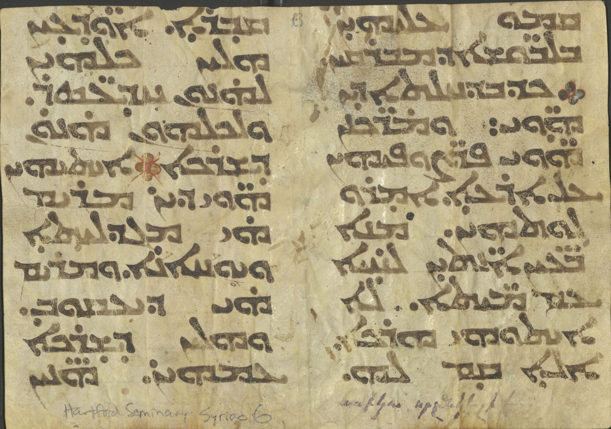

- Material: parchment
- Date: approximately 11th - 13th cent.
- Script type: Syriac Estrangelo
- Dimensions: 23 x 16.5 cm
- References: The entry in the online catalogue.
A cut fragment on one side is a miniature icon depicting the descent of Christ into Sheol (also this iconic scene known as the “Harrowing of Hell”). The back side includes a biblical text from the New Testament (in two columns, 11 lines in each column); the written surface is the same of the current dimensions of the fragment since the cut took out the original margins.
The text is from the Ḥarqlean reading of the Resurrection Evening: Luke 24,4b-6a (right column), Luke 24,9-10 (left column).
In the margin of the Syriac text bears Armenian words written by a later hand — ասիկա սրընկելի է — that can refer to making the sound of a flute or whistle.
See the first online announcement about the re-discovery of this fragment: Ishac, E.A., Flew under the Digital and non-Digital Scholarly Radars: A Mysterious Box of Syriac Fragments at Yale University (Part 2) January 17, 2023 (Post on the Digital Orientalist)
Literature:
Ishac, E.A., “Expensive Blessings in the Syriac Liturgical Tradition” On Earth as in Heaven? Liturgy, Materiality, and Economics, edited by Melanie C. Ross, Collegeville, Minnesota: Liturgical Press, 2025, pp. 153-179.
Images:
Transcription:
f. 1v col. A (Luke 24, 4b-6a)
ܩܡܘ ܥܠܝܗܝܢ
ܒܠܒ̈ܘܫܐ ܕܡܒܪܩܝܢ.
܀ ܟܕ ܒܕܚܠܬܐ ܕܝܢ
ܗ̈ܘ̣ܝ: ܘܡ̇ܪ̈ܟܢܢ
ܗ̈ܘܝ ܦܕ̈ܨܘܦܝܗܝܢ
ܥܠ ܐܪܥܐ܆ ܐܡܼܪܘ
ܠܘܬܗܝܢ. ܡ̇ܢܐ
ܒ̇ܥ̈ܝܢ ܐ̈ܢܬܝ̣ܢ ܠܚܲܝܐ
ܥܡ ܡ̈ܝܬܐ. ܠܐ
ܐܝܬܘܗܝ ܗܪܟܐ.
ܐܠܐ̣ ܩ̣ܡ ܠܗ.
f. 1r col. B (Luke 24, 9-10)
ܩܒܪܐ܆ ܐܘܕܥ̈ܝܢ
ܗܠܝܢ ܟܠܗܝܢ
ܠܗܿܢܘܢ ܚܕܥ̈ܣܪ܆
ܘܠܟܠܗܘܢ ܗܿܢܘܢ
ܕܫܪܟܐ܀ ܐܝܬܝܗܝܢ
ܗ̈ܘܝ ܕܝܢ ܡܪܝܡ
ܗܿܝ ܡܓܕܠܝܬܐ
ܘܝܘܾܚܰܐܰܢܐ. ܘܡܪܝܡ
ܗ̇ܝ ܕܝܥܩܘܒ܆
ܘܗܠܝܢ ܕܫܪܟܐ
ܥܡܗܝܢ܇ ܗ̇ܢ̈ܝܢ
In the margin under the Syriac text of column A, Armenian words: ասիկա սրընկելի է
Deleted Syriac words that were supposed to complete column A and begin with column B:
ܐܬܕܰܟܪ̈ܝܢ ܐܝܟܢܐ ܕܡܲܠܠ ܠܟܝܢ ܟܕ ܥܕܟܝܠ ܐܝܬܘܗܝ ܗܘܐ ܒܓܠܝܠܐ: ܟܕ ܐܡܿܪ ܕܙ݀ܕܩ ܠܗ ܠܒܪܗ ܕܐܢܫܐ ܠܡܫܬܠܡܘ ܒܐܝ̈ܕܝܐ ܕܒܢܝ̈ܢܫܐ ܚ̈ܛܝܐ܇ ܘܠܡܨܛܠܒܘ: ܘܒܝܘܡܐ ܬܠܝܬܝܐ ܠܡܩܡ. ܘܐܬܕܰܟܪܝܢ ܠܡ̈ܠܐ ܕܝܠܗ܀ ܘܟܕ ܗܦܟܷ̈ܝܢ
In the margin under the Syriac text of column B, English words: Hartford Seminary Syriac 6.